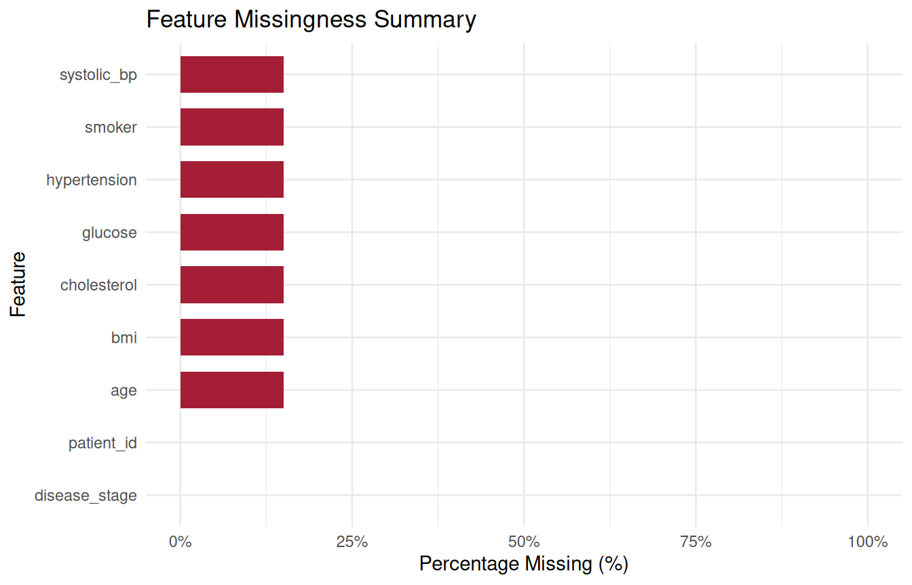
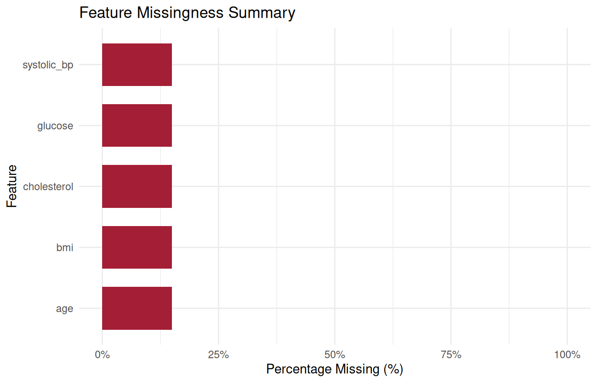
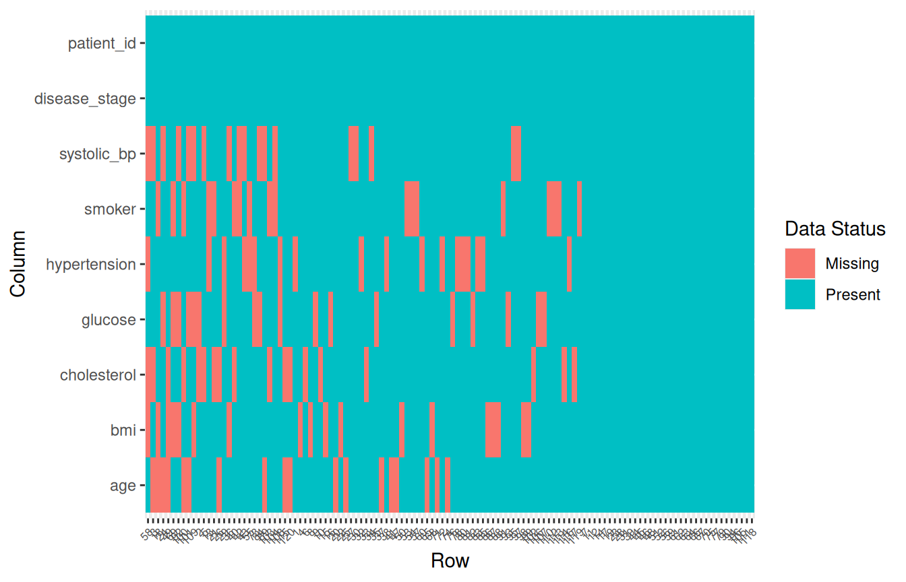
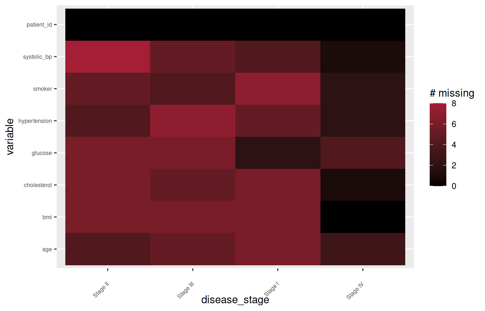
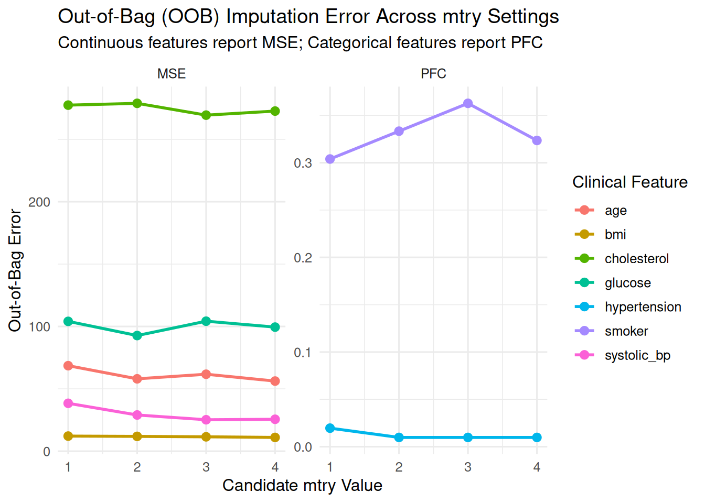
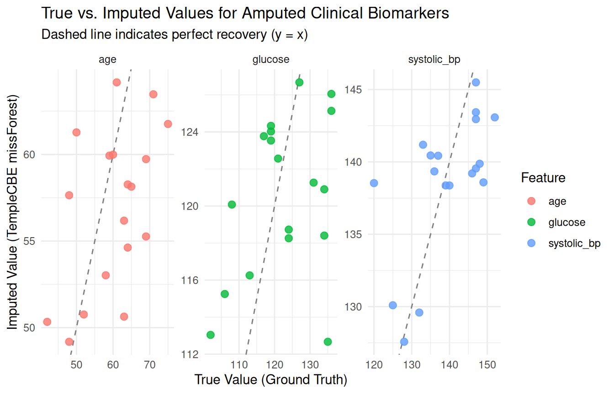

01. Exploratory Data Analysis, Missingness Auditing, and Normalization
Source:vignettes/eda_and_missingness.Rmd
eda_and_missingness.RmdOverview
In clinical trials, electronic health records (EHR), and
epidemiological registries, data cleanliness is rarely a given. Datasets
frequently exhibit complex missingness patterns, non-standard missing
codes (e.g. "999", "-99",
"Unknown", "Refused", ""), and
extreme statistical outliers from data-entry errors or severe disease
phenotypes.
Standard data science tools often assume missingness is cleanly
represented as NA, requiring destructive multi-pass
preprocessing before exploratory analysis can even begin. The
TempleCBE package provides domain-tailored
biostatistical tools to audit non-standard missingness
non-destructively, rank feature completeness, standardize numerical
features, classify clinical outliers under formal IQR standards, and
transition seamlessly into tuned machine-learning imputation.
Comparison with existing R EDA & missingness tools
The R ecosystem offers several packages for exploratory data analysis
and missingness visualization, notably naniar, visdat, mice, and general EDA toolkits like
DataExplorer and summarytools. Understanding
where TempleCBE fits alongside these frameworks clarifies
its value for clinical biostatisticians and data managers.
Existing tools and their limitations in clinical workflows
-
naniar&visdat: Pioneered tidy representation and visualization of missing data (vis_miss(),gg_miss_var()). However, they operate exclusively on existingNAvalues. When raw clinical data contains sentinel values (such as"999","-99", or blank strings), users must first apply mutating functions likereplace_with_na_all(), which can accidentally alter legitimate numerical values, modify factor levels, or mutate data types. -
mice/Amelia: Primarily multiple imputation engines. While they include basic diagnostics (e.g.md.pattern()), their tools are oriented toward parameter checking rather than automated feature-level reporting for regulatory deliverables. -
Base R /
dplyrsummaries: Simple calls likecolSums(is.na(df))provide quick counts, but lack built-in percentage calculations, descending order sorting, sentinel code awareness, and publication-ready formatting.
Where TempleCBE provides distinct value
TempleCBE was built specifically for the constraints of
institutional biostatistics core facilities:
-
Zero-mutation non-standard code auditing:
SumNa()andfeatures_percent_miss()natively accept vectors of custom missing codes (na_list = c("999", "-99", "", "Unknown", "NA")). They compute exact missingness counts and percentages without altering or coercing the underlying data frame. -
Two-tier clinical outlier governance: While generic
outlier functions often rely on simple z-score cutoffs or arbitrary
quantiles,
detect_outliers()implements Tukey’s formal biostatistical standard, explicitly distinguishing between MILD () and EXTREME () outliers and returning structured classification flags that preserve patient keys. -
Controlled imputation benchmarking: The
add_missing()function allows statisticians to simulate controlled Missing Completely at Random (MCAR) mechanisms on complete datasets, tracking the exact row-and-column coordinates of every amputed cell to empirically validate downstream imputation performance. -
Seamless transition to tuned imputation:
TempleCBElinks missingness auditing directly to high-performance imputation engines (missforest_sweep_mtry()andmissranger_sweep_mtry()) that automatically optimize random forest hyperparameters (mtry) independently for each clinical feature.
Feature comparison matrix
| Dimension | Base / Tidyverse |
naniar / visdat
|
TempleCBE |
|---|---|---|---|
| Multi-code missingness | Manual recoding required | Requires mutating replace_with_na()
|
Built-in via na_list argument (zero
mutation) |
| Feature-level ranking | Multi-line summarise()
|
miss_var_summary() |
features_percent_miss() (sorted tibble +
S3 plot) |
| Missingness heatmap | Not built-in | vis_miss() |
missmap() (custom clinical palette &
grouping) |
| Outlier classification | Manual IQR calculations | Not covered | Two-tier Tukey standard (MILD: 1.5×, EXTREME: 3.0×) |
| Feature normalization |
scale() (matrix output) |
Not covered |
min_max_norm(), z_norm(),
range_norm()
|
| Controlled amputation | External (mice::ampute) |
Limited |
add_missing() with tracked cell
coordinates |
| Imputation handoff | External | External | Integrated missforest_sweep_mtry() /
missranger_sweep_mtry()
|
1. Starting with a Full Synthetic Clinical Cohort
To demonstrate missingness auditing and empirically evaluate imputation accuracy, we begin with a relatively full synthetic cohort of clinical patients. In real-world studies, true underlying values are unknown once lost. By generating a complete cohort with realistic physiological correlations first, we establish a verifiable ground truth that enables downstream recovery benchmarking:
set.seed(2026)
n <- 120
# Realistic clinical covariance structure
age <- round(rnorm(n, mean = 58, sd = 9))
bmi <- round(rnorm(n, mean = 27.0, sd = 3.8), 1)
systolic_bp <- round(95 + 0.45 * age + 0.65 * bmi + rnorm(n, mean = 0, sd = 7))
cholesterol <- round(155 + 0.55 * age + 1.10 * bmi + rnorm(n, mean = 0, sd = 15))
glucose <- round(72 + 0.35 * age + 0.95 * bmi + rnorm(n, mean = 0, sd = 10))
smoker <- factor(sample(c("No", "Yes"), n, replace = TRUE, prob = c(0.65, 0.35)))
hypertension <- factor(ifelse(systolic_bp >= 135 | (age >= 62 & bmi >= 28), "Yes", "No"))
disease_stage <- factor(sample(c("Stage I", "Stage II", "Stage III", "Stage IV"), n,
replace = TRUE, prob = c(0.30, 0.30, 0.25, 0.15)
))
cohort_clean <- tibble::tibble(
patient_id = sprintf("PT_%03d", seq_len(n)),
age = age,
systolic_bp = systolic_bp,
bmi = bmi,
cholesterol = cholesterol,
glucose = glucose,
smoker = smoker,
hypertension = hypertension,
disease_stage = disease_stage
)
# Preview the clean cohort
head(cohort_clean, 6)
#> # A tibble: 6 × 9
#> patient_id age systolic_bp bmi cholesterol glucose smoker hypertension
#> <chr> <dbl> <dbl> <dbl> <dbl> <dbl> <fct> <fct>
#> 1 PT_001 63 147 34.2 244 133 Yes Yes
#> 2 PT_002 48 140 35.1 189 134 No Yes
#> 3 PT_003 59 148 27.9 187 117 No Yes
#> 4 PT_004 57 146 30.4 200 111 No Yes
#> 5 PT_005 52 132 20.4 222 128 No No
#> 6 PT_006 35 129 28.8 219 128 Yes No
#> # ℹ 1 more variable: disease_stage <fct>
# Verify complete data integrity (zero missingness)
SumNa(cohort_clean)
#> [1] 0The dataset contains: - Continuous biomarkers: age,
systolic_bp, bmi, cholesterol,
and glucose. - Categorical clinical factors:
smoker, hypertension, and
disease_stage. - Unique identifier:
patient_id.
2. Controlled Amputation with add_missing()
In validation studies, biostatisticians simulate controlled Missing
Completely at Random (MCAR) mechanisms using add_missing().
This allows us to observe how data-auditing tools detect missingness and
how machine-learning algorithms reconstruct true values.
Here, we amputate 15% missingness across 7 clinical
predictors, leaving patient_id and
disease_stage 100% complete:
set.seed(42)
amputed <- add_missing(
cohort_clean,
cols = c(age, systolic_bp, bmi, cholesterol, glucose, smoker, hypertension),
pct_na = 0.15
)
# Inspect the amputed cohort preview
head(amputed, 6)
#> # A tibble: 6 × 9
#> patient_id age systolic_bp bmi cholesterol glucose smoker hypertension
#> <chr> <dbl> <dbl> <dbl> <dbl> <dbl> <fct> <fct>
#> 1 PT_001 63 147 34.2 244 133 Yes NA
#> 2 PT_002 48 140 35.1 NA NA No Yes
#> 3 PT_003 NA NA 27.9 NA 117 No Yes
#> 4 PT_004 57 146 NA 200 111 No Yes
#> 5 PT_005 52 NA 20.4 NA 128 No No
#> 6 PT_006 35 129 28.8 NA 128 Yes No
#> # ℹ 1 more variable: disease_stage <fct>Tracking masked coordinates for ground-truth validation
A crucial feature of add_missing() is that it attaches
an attribute named "missing_cells". This attribute stores a
tibble of every masked cell’s exact row number and
feature name:
# Extract the ground-truth coordinate lookup table
missing_cells <- attr(amputed, "missing_cells")
cat("Total cells amputed:", nrow(missing_cells), "\n")
#> Total cells amputed: 126
head(missing_cells, 8)
#> # A tibble: 8 × 2
#> row feature
#> <int> <chr>
#> 1 3 age
#> 2 18 age
#> 3 20 age
#> 4 24 age
#> 5 25 age
#> 6 26 age
#> 7 37 age
#> 8 41 ageBecause most dplyr verbs strip custom attributes upon
transformation, always extract
missing_cells <- attr(amputed, "missing_cells")
immediately following amputation when benchmarking imputation
pipelines.
Heterogeneous missingness: Column-specific proportions via vector
pct_na
In real-world clinical cohorts, different variables rarely share an
identical missingness rate. Routine clinical covariates (such as
age or bmi) may only be missing in 5–10% of
records, whereas specialized laboratory panels (such as
cholesterol or glucose) may be uncollected in
25–35% of patients.
add_missing() supports a numeric vector for
pct_na whose length matches the number of selected
columns:
# Generate column-specific missingness proportions with runif()
set.seed(42)
cols_ampute <- c("age", "systolic_bp", "bmi", "cholesterol", "glucose", "smoker", "hypertension")
p_vector <- cols_ampute |>
length() |>
runif(min = 0.05, max = 0.30) |>
round(2)
names(p_vector) <- cols_ampute
p_vector
#> age systolic_bp bmi cholesterol glucose smoker
#> 0.28 0.28 0.12 0.26 0.21 0.18
#> hypertension
#> 0.23
# Amputate each column according to its specific proportion
amputed_hetero <- add_missing(
cohort_clean,
cols = c(age, systolic_bp, bmi, cholesterol, glucose, smoker, hypertension),
pct_na = p_vector
)
# Inspect how features_percent_miss captures the heterogeneous rates
features_percent_miss(amputed_hetero)
#> # A tibble: 9 × 5
#> feature SumNa SumComp PctNa PctComp
#> <chr> <int> <int> <dbl> <dbl>
#> 1 age 34 86 0.283 0.717
#> 2 systolic_bp 34 86 0.283 0.717
#> 3 cholesterol 31 89 0.258 0.742
#> 4 hypertension 28 92 0.233 0.767
#> 5 glucose 25 95 0.208 0.792
#> 6 smoker 22 98 0.183 0.817
#> 7 bmi 14 106 0.117 0.883
#> 8 patient_id 0 120 0 1
#> 9 disease_stage 0 120 0 1Notice how features_percent_miss() directly reflects
each column’s distinct amputation share, and the
missing_cells attribute accurately tracks the varying
number of masked cells per feature.
3. Auditing Missing Data
Now that missingness has been induced, we audit the dataset using
TempleCBE’s non-destructive auditing suite.
Total missingness with SumNa()
SumNa() evaluates total missing cells across an entire
vector, data frame, or matrix. When working with raw hospital extracts
containing non-standard placeholders, specify custom sentinel codes in
na_list:
Feature-level completeness table with
features_percent_miss()
In clinical study preparation, biostatisticians need a sorted summary showing which variables exceed missingness thresholds (e.g. variables with missingness that cannot be reliably imputed):
miss_summary <- features_percent_miss(amputed)
miss_summary
#> # A tibble: 9 × 5
#> feature SumNa SumComp PctNa PctComp
#> <chr> <int> <int> <dbl> <dbl>
#> 1 age 18 102 0.15 0.85
#> 2 systolic_bp 18 102 0.15 0.85
#> 3 bmi 18 102 0.15 0.85
#> 4 cholesterol 18 102 0.15 0.85
#> 5 glucose 18 102 0.15 0.85
#> 6 smoker 18 102 0.15 0.85
#> 7 hypertension 18 102 0.15 0.85
#> 8 patient_id 0 120 0 1
#> 9 disease_stage 0 120 0 1Notice that: - All 7 amputed features exhibit exactly
PctNa = 0.15 (18 missing cells out of 120 rows). - The
un-amputed columns (patient_id and
disease_stage) correctly report PctNa = 0.00.
- The output is automatically sorted in descending order of missingness
proportion.
Visualizing missingness with
plot_features_percent_miss()
plot_features_percent_miss() (or calling
plot() on a features_percent_miss object)
produces a clean horizontal bar chart displaying feature-level
missingness:
plot_features_percent_miss(amputed)
We can also isolate the top features or enforce custom thresholds:
plot_features_percent_miss(amputed, top_n = 5)
Missingness heatmaps with missmap()
The missmap() function visualizes missingness patterns
across the cohort.
1. Patient-level heatmap (row_order = FALSE)
Visualizes every patient row and feature column. Rows and columns are sorted by missingness density, allowing visual identification of patients with clustered missing labs:
missmap(amputed)
2. Group-aggregated heatmap (by_column = ...)
In clinical trials, auditing missingness aggregated by study arm, hospital site, or disease stage is critical for trial monitoring:
# Aggregate missingness counts per disease stage
missmap(amputed, by_column = disease_stage, fill = "count")
4. Clinical Outlier Governance and Feature Normalization
Before proceeding to imputation, exploratory clinical workflows require screening for distributional anomalies and scaling features.
Two-tier Tukey outlier detection
detect_outliers() audits numerical features using
Tukey’s formal IQR criteria: - Mild Outliers: Values
lying outside
.
- Extreme Outliers: Values lying outside
.
# Screen cholesterol for mild and extreme clinical anomalies
outlier_chol <- detect_outliers(cohort_clean$cholesterol)
outlier_chol
#> # A tibble: 1 × 4
#> column value .outlier .outlier_type
#> <chr> <dbl> <fct> <fct>
#> 1 value 274 TRUE MILDDistributional testing
Before applying parametric survival or regression models, test
distributional assumptions with distribution_test():
distribution_test(cohort_clean$glucose)
#> # A tibble: 3 × 8
#> statistic parameter p.value method distribution.test p_value_sig distribution
#> <dbl> <int> <dbl> <chr> <lgl> <chr> <chr>
#> 1 12.6 8 0.125 Chi-sq… TRUE "" poisson
#> 2 0.994 NA 0.883 Shapir… TRUE "" normal
#> 3 0.0721 NA 0.131 Lillie… TRUE "" normal
#> # ℹ 1 more variable: is_int <lgl>Feature normalization
TempleCBE provides three standard vector transformations
for preparing predictors for penalized regressions or distance-based
algorithms: - min_max_norm(): Scales values strictly to
.
- z_norm(): Centers to mean
and scales to
.
- range_norm(): Scales relative to combined distribution
bounds.
# Sample values from baseline systolic blood pressure
bp_sample <- cohort_clean$systolic_bp[1:5]
tibble::tibble(
raw = bp_sample,
min_max = round(min_max_norm(bp_sample), 3),
z_score = round(z_norm(bp_sample), 3)
)
#> # A tibble: 5 × 3
#> raw min_max z_score
#> <dbl> <dbl> <dbl>
#> 1 147 0.938 0.657
#> 2 140 0.5 -0.388
#> 3 148 1 0.807
#> 4 146 0.875 0.508
#> 5 132 0 -1.58Pairwise correlation screening with
corr_test_all()
Screening for multicollinearity across clinical biomarkers helps identify redundant covariates before regression modeling and confirms the underlying covariance that imputation engines exploit:
# Pairwise correlation across continuous clinical biomarkers
corr_tbl <- corr_test_all(
cohort_clean[, c("age", "systolic_bp", "bmi", "cholesterol", "glucose")]
)
head(corr_tbl, 6)
#> # A tibble: 6 × 4
#> var1 var2 r p_value
#> <chr> <chr> <dbl> <dbl>
#> 1 age systolic_bp 0.524 8.21e-10
#> 2 systolic_bp bmi 0.379 1.92e- 5
#> 3 bmi glucose 0.292 1.19e- 3
#> 4 cholesterol glucose 0.286 1.54e- 3
#> 5 age glucose 0.257 4.62e- 3
#> 6 systolic_bp cholesterol 0.244 7.29e- 35. Tuned Random Forest Imputation with
missforest_sweep_mtry()
Once missingness patterns and outliers have been audited, biostatisticians must handle missing values. Random forest imputation is widely considered the gold standard for mixed clinical data because it captures non-linear physiological relationships and complex interactions without requiring parametric distribution assumptions.
The mtry dilemma in clinical data
Random forest imputation iterates through each variable with missing
values, fitting a forest predicting that variable from all other
variables. The single most impactful hyperparameter is
mtry — the number of candidate variables
sampled at each split: - If mtry is too low, strong
predictive biomarkers may be missed at key splits. - If
mtry is too high, trees become correlated and overfit noisy
clinical features.
Critically, different clinical variables perform best at
different mtry values. A continuous biomarker
(e.g. systolic_bp) may achieve minimal error at
,
whereas a binary factor (e.g. smoker) may perform best at
.
Standard implementations force analysts to choose a single global
mtry.
TempleCBE’s solution: Independent per-column best
mtry assembly
missforest_sweep_mtry() sweeps across candidate
mtry values, tracks out-of-bag (OOB) error for every column
at every mtry, and pulls each column independently from the
specific run where that column achieved its minimal error.
# Run missForest sweep across mtry = 1:4
# We exclude patient_id and disease_stage from imputation predictors
res_forest <- missforest_sweep_mtry(
data = amputed,
exclude = c("patient_id", "disease_stage"),
mtry_values = 1:4,
ntree = 60,
maxiter = 5,
parallel = FALSE,
seed = 123
)Inspecting the winning mtry per feature
# Winning mtry and minimum OOB error per column
res_forest$best
#> # A tibble: 7 × 4
#> column error_type error mtry
#> <chr> <chr> <dbl> <int>
#> 1 smoker PFC 0.304 1
#> 2 glucose MSE 92.7 2
#> 3 hypertension PFC 0.00980 2
#> 4 systolic_bp MSE 25.2 3
#> 5 cholesterol MSE 269. 3
#> 6 age MSE 56.2 4
#> 7 bmi MSE 11.1 4Notice that: - Features optimize at different
mtry values (e.g. smoker at
,
hypertension and glucose at
,
systolic_bp and cholesterol at
,
age and bmi at
).
- Categorical features report Proportion of Falsely Classified
(PFC), while continuous features report Mean Squared
Error (MSE). - imp_data contains the
completed cohort with patient_id and
disease_stage re-attached in place:
head(res_forest$imp_data, 6)
#> # A tibble: 6 × 9
#> patient_id age systolic_bp bmi cholesterol glucose smoker hypertension
#> <chr> <dbl> <dbl> <dbl> <dbl> <dbl> <fct> <fct>
#> 1 PT_001 63 147 34.2 244 133 Yes Yes
#> 2 PT_002 48 140 35.1 223. 118. No Yes
#> 3 PT_003 59.9 140. 27.9 222. 117 No Yes
#> 4 PT_004 57 146 26.4 200 111 No Yes
#> 5 PT_005 52 130. 20.4 214. 128 No No
#> 6 PT_006 35 129 28.8 213. 128 Yes No
#> # ℹ 1 more variable: disease_stage <fct>
# Verify that all missing values have been successfully resolved
SumNa(res_forest$imp_data)
#> [1] 06. Comparing Differences in Errors
A rigorous validation workflow evaluates errors along two dimensions:
1. Model-reported Out-of-Bag (OOB) errors across
candidate mtry values. 2. Empirical recovery
errors comparing imputed values directly against the known
ground truth.
Comparison 1: Differences in OOB errors across mtry
values
We first examine how out-of-bag error varies across the swept
mtry values for each feature:
# Tidy OOB error across all mtry values
res_forest$oob_error |>
dplyr::arrange(column, mtry)
#> # A tibble: 28 × 4
#> column error_type error mtry
#> <chr> <chr> <dbl> <int>
#> 1 age MSE 68.6 1
#> 2 age MSE 58.0 2
#> 3 age MSE 61.7 3
#> 4 age MSE 56.2 4
#> 5 bmi MSE 12.1 1
#> 6 bmi MSE 11.9 2
#> 7 bmi MSE 11.5 3
#> 8 bmi MSE 11.1 4
#> 9 cholesterol MSE 277. 1
#> 10 cholesterol MSE 279. 2
#> # ℹ 18 more rowsWe can visualize this trajectory to see why variable-wise selection
outperforms a single global mtry:
res_forest$oob_error |>
ggplot(aes(x = mtry, y = error, color = column, group = column)) +
geom_line(linewidth = 1) +
geom_point(size = 2.5) +
facet_wrap(~error_type, scales = "free_y") +
theme_minimal(base_size = 12) +
labs(
title = "Out-of-Bag (OOB) Imputation Error Across mtry Settings",
subtitle = "Continuous features report MSE; Categorical features report PFC",
x = "Candidate mtry Value",
y = "Out-of-Bag Error",
color = "Clinical Feature"
) +
scale_x_continuous(breaks = 1:4)
Notice the key biostatistical insights: - If a global setting of
had been enforced, continuous features like systolic_bp and
cholesterol would suffer significantly elevated MSE. - If a
global setting of
had been enforced, binary features like smoker and
hypertension would suffer increased misclassification. -
TempleCBE’s independent column assembly selects the global
minimum for every variable simultaneously.
Comparison 2: Imputation Recovery vs. Known Ground Truth
Because we started with a complete dataset
(cohort_clean) and used add_missing() to
induce missingness, we can cross-reference every imputed cell with its
original, unmasked ground truth:
# Match imputed cells to true values via missing_cells coordinates
truth_vs_imp <- missing_cells |>
dplyr::rowwise() |>
dplyr::mutate(
true_val = as.character(cohort_clean[[feature]][row]),
imputed_val = as.character(res_forest$imp_data[[feature]][row])
) |>
dplyr::ungroup()
# Sample of ground truth vs imputed predictions
head(truth_vs_imp, 10)
#> # A tibble: 10 × 4
#> row feature true_val imputed_val
#> <int> <chr> <chr> <chr>
#> 1 3 age 59 59.9303571428572
#> 2 18 age 60 59.9879443241943
#> 3 20 age 64 54.6236375661376
#> 4 24 age 71 63.4742791005291
#> 5 25 age 58 53.0240145502645
#> 6 26 age 75 61.758664021164
#> 7 37 age 63 56.1781216931217
#> 8 41 age 48 57.6436417748918
#> 9 47 age 64 58.2681746031746
#> 10 49 age 65 58.1386375661376Continuous feature recovery metrics
For continuous biomarkers, we quantify recovery fidelity using: - Mean Absolute Error (MAE): Average magnitude of prediction errors. - Root Mean Squared Error (RMSE): Penalizes larger deviations. - Pearson Correlation (): Measures linear agreement between true and recovered values.
cont_features <- c("age", "systolic_bp", "bmi", "cholesterol", "glucose")
cont_metrics <- truth_vs_imp |>
dplyr::filter(feature %in% cont_features) |>
dplyr::mutate(
true_num = as.numeric(true_val),
imp_num = as.numeric(imputed_val),
diff = imp_num - true_num
) |>
dplyr::group_by(feature) |>
dplyr::summarise(
n_masked = dplyr::n(),
MAE = round(mean(abs(diff)), 2),
RMSE = round(sqrt(mean(diff^2)), 2),
Corr = round(cor(imp_num, true_num), 3),
.groups = "drop"
)
cont_metrics
#> # A tibble: 5 × 5
#> feature n_masked MAE RMSE Corr
#> <chr> <int> <dbl> <dbl> <dbl>
#> 1 age 18 6.98 8.17 0.5
#> 2 bmi 18 2.04 2.67 0.208
#> 3 cholesterol 18 17.0 22.4 0.207
#> 4 glucose 18 8.43 9.92 0.353
#> 5 systolic_bp 18 5.55 7.01 0.636Categorical feature recovery metrics
For binary clinical factors, we evaluate classification accuracy and misclassification rate:
cat_features <- c("smoker", "hypertension")
cat_metrics <- truth_vs_imp |>
dplyr::filter(feature %in% cat_features) |>
dplyr::group_by(feature) |>
dplyr::summarise(
n_masked = dplyr::n(),
accuracy = round(mean(true_val == imputed_val), 3),
mismatch_rate = round(mean(true_val != imputed_val), 3),
.groups = "drop"
)
cat_metrics
#> # A tibble: 2 × 4
#> feature n_masked accuracy mismatch_rate
#> <chr> <int> <dbl> <dbl>
#> 1 hypertension 18 0.944 0.056
#> 2 smoker 18 0.611 0.389Visualizing recovery fidelity
We can visually evaluate recovery by plotting true values versus imputed values for continuous predictors:
truth_vs_imp |>
dplyr::filter(feature %in% c("systolic_bp", "age", "glucose")) |>
dplyr::mutate(
true_num = as.numeric(true_val),
imp_num = as.numeric(imputed_val)
) |>
ggplot(aes(x = true_num, y = imp_num, color = feature)) +
geom_abline(slope = 1, intercept = 0, linetype = "dashed", color = "grey50") +
geom_point(size = 2.5, alpha = 0.8) +
facet_wrap(~feature, scales = "free") +
theme_minimal(base_size = 11) +
labs(
title = "True vs. Imputed Values for Amputed Clinical Biomarkers",
subtitle = "Dashed line indicates perfect recovery (y = x)",
x = "True Value (Ground Truth)",
y = "Imputed Value (TempleCBE missForest)",
color = "Feature"
)
The recovery results confirm that: - Strongly correlated features
like systolic_bp and hypertension achieve high
recovery precision (correlation
and classification accuracy
).
- Out-of-bag error tracks closely with true empirical recovery error,
confirming that optimizing mtry per feature leads to
tangible gains in reconstructing real patient data.
7. Fast, Large-Scale Imputation with
missranger_sweep_mtry()
For large clinical cohorts
(e.g.
patients or high-dimensional panels), missForest can be
computationally intensive. missranger_sweep_mtry()
leverages the C++ ranger engine and supports Predictive
Mean Matching (PMM):
-
Predictive Mean Matching (
pmm.k): Settingpmm.k > 0(e.g.pmm.k = 3) ensures that imputed values are drawn from actual observed patient donor values rather than synthetic regression averages — critical for bounded clinical scores (e.g. integer counts, survey scores). -
Parallel evaluation: Uses
furrrto evaluate candidatemtryvalues across CPU cores in parallel without thread oversubscription.
library(furrr)
plan(multisession, workers = 2)
# Fast sweep with predictive mean matching
res_ranger <- missranger_sweep_mtry(
data = amputed,
exclude = c("patient_id", "disease_stage"),
mtry_values = 1:4,
num.trees = 200,
pmm.k = 3,
seed = 2026,
parallel = TRUE
)
# Inspect winning mtry values from ranger
res_ranger$bestSafety and data governance guardrails
Both sweep functions incorporate essential clinical data safeguards:
1. Identifier and timestamp protection
(exclude): Clinical metadata (patient IDs,
specimen barcodes, visit dates) are quarantined from the forest training
matrix and re-attached unaltered to the final output. 2.
Preventing data fabrication
(max_pct_missing): Features that are
missing (or any custom threshold) are automatically held out from
imputation, carried through unimputed, and listed in
excluded_high_missing. 3. Refusing
all-NA columns
(check_no_all_na_columns): Standard
missForest silently drops all-NA columns,
while missRanger silently returns them still
NA. TempleCBE explicitly halts and warns the
user so schema integrity is never compromised.
8. Practical Adoption Patterns
Here are three common patterns for applying TempleCBE’s
EDA tools to real-world studies:
Pattern 1: Clinical trial data intake audit
Create a standardized data quality intake report for newly exported registry data:
audit_clinical_intake <- function(raw_df) {
message("Auditing Clinical Intake...")
# 1. Quantify missingness including institutional sentinel values
miss_summary <- features_percent_miss(
raw_df,
na_list = c("999", "-99", "Unknown", "Refused", "")
)
# 2. Flag variables with severe missingness (> 30%)
flagged_vars <- miss_summary |>
filter(PctNa > 0.30)
# 3. Screen continuous lab values for extreme clinical outliers
num_cols <- raw_df |> select(where(is.numeric))
outliers <- lapply(num_cols, detect_outliers)
list(
missing_summary = miss_summary,
severe_missing = flagged_vars,
outliers = outliers
)
}Pattern 2: Regulatory missingness tables for Study Protocols & CSRs
Clinical Study Reports (CSRs) submitted to regulatory agencies (FDA, EMA) require clear tables of missing baseline covariates:
# Export publication-ready missingness tables
csr_missing_table <- features_percent_miss(amputed) |>
rename(
`Clinical Variable` = feature,
`Missing Count (n)` = SumNa,
`Missing Rate (%)` = PctNa
) |>
mutate(`Missing Rate (%)` = sprintf("%.1f%%", `Missing Rate (%)` * 100))
# Print or write to Excel/RTF
writexl::write_xlsx(csr_missing_table, "CSR_Table_14_1_Missingness.xlsx")Pattern 3: Outlier screening preserving subject record keys
Flag outliers while maintaining patient identifiers for case review with clinical investigators:
# Screen lab values and join back to patient IDs
iqr_audit <- detect_outliers(cohort_clean$cholesterol)
flagged_patients <- cohort_clean |>
slice(c(iqr_audit$mild_indices, iqr_audit$extreme_indices)) |>
select(patient_id, disease_stage, cholesterol) |>
mutate(
flag = ifelse(patient_id %in% cohort_clean$patient_id[iqr_audit$extreme_indices],
"EXTREME_OUTLIER", "MILD_OUTLIER"
)
)Summary
TempleCBE delivers a clean, auditable, and
non-destructive exploratory workflow engineered specifically for the
realities of clinical data. By combining SumNa(),
features_percent_miss(), missmap(),
detect_outliers(), and add_missing() with
downstream tuned imputation (missforest_sweep_mtry() and
missranger_sweep_mtry()), biostatisticians can uphold
rigorous data governance standards from initial data intake through
regulatory delivery.